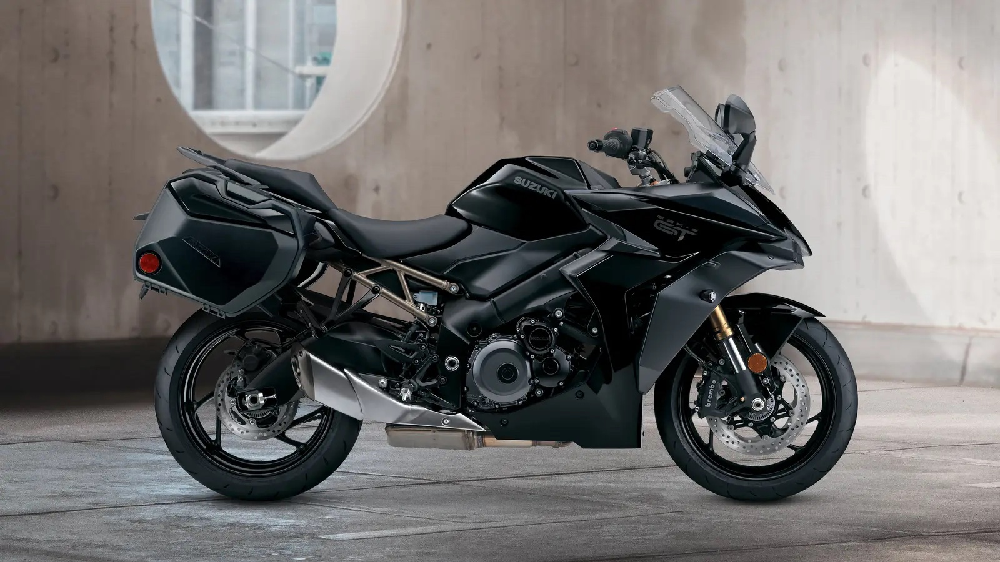
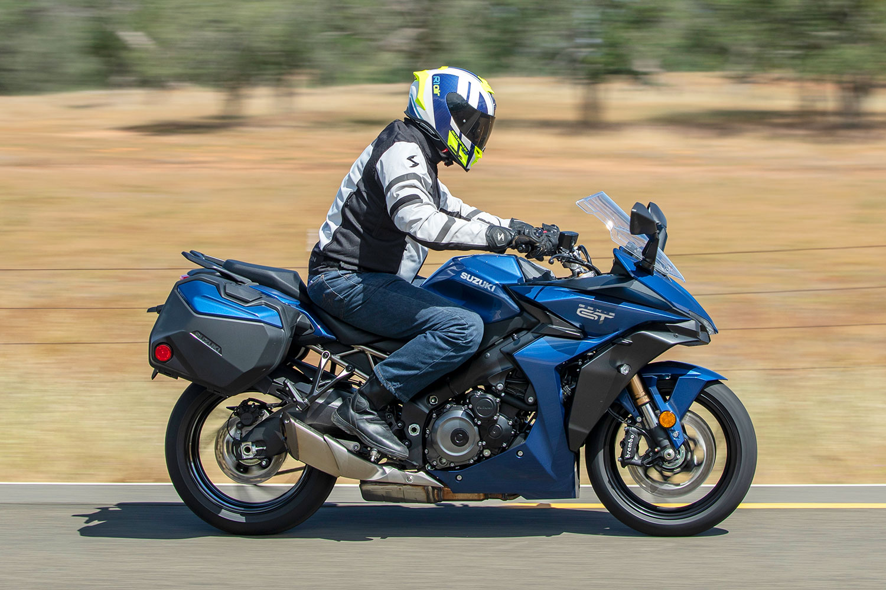
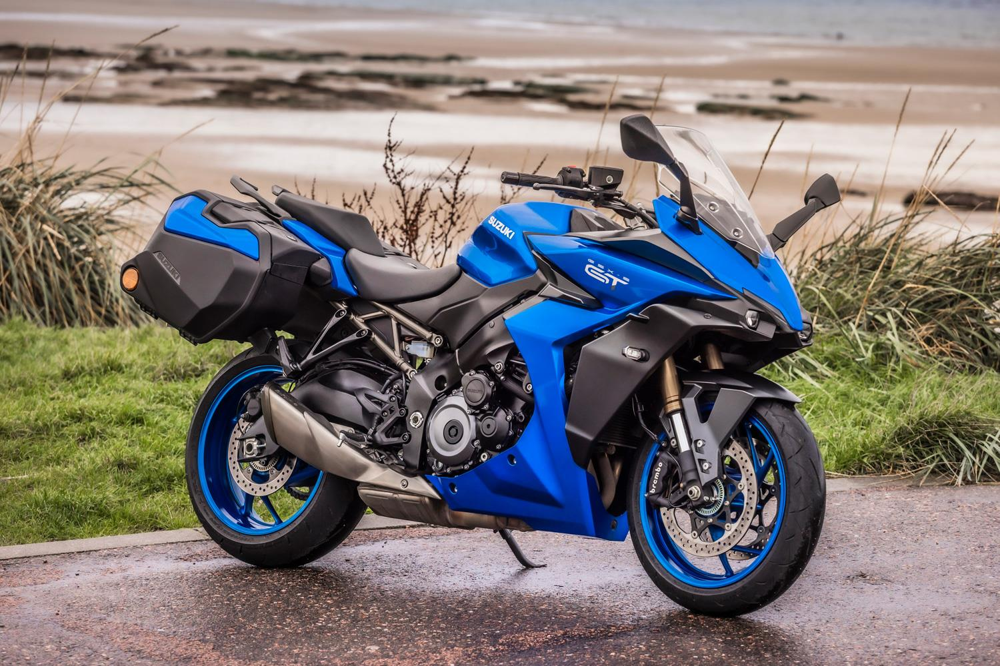
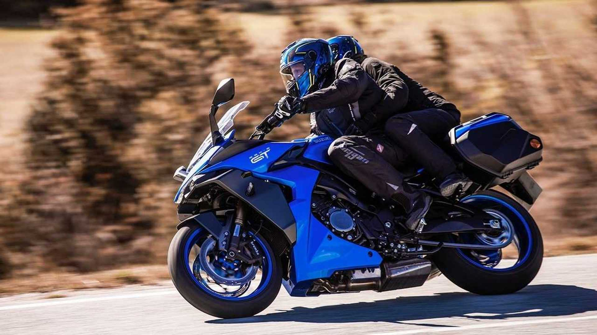
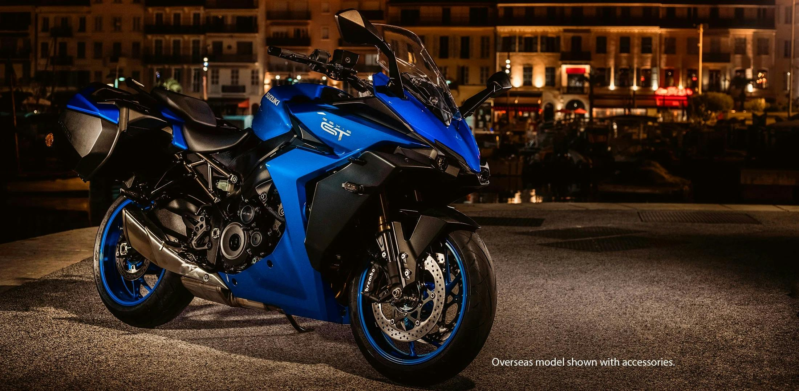
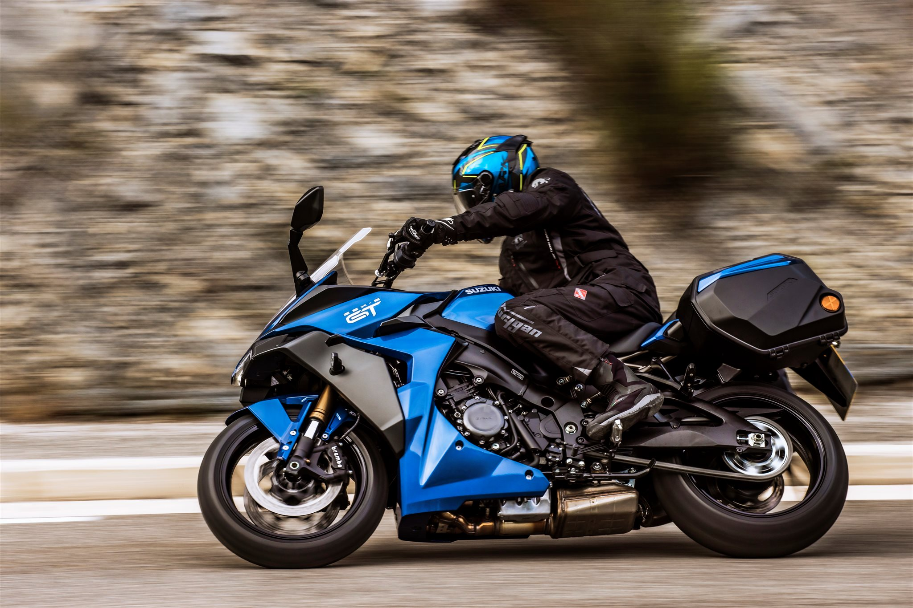
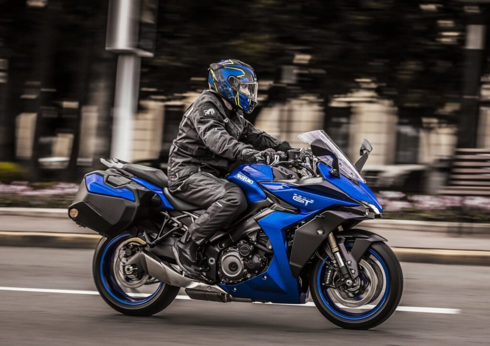

SUZUKI
SUZUKI
Is a sports tourer motorcycle that combines superbike-derived performance with the latest technology and all-day comfort¹. It's designed to deliver a next-level sports touring experience for both rider and pillion¹.
The GSX-S1000GT+ is powered by a GSX-R1000-based engine³. This thrilling, torque-rich powerplant and seamless quickshifter is just the start¹.
The GSX-S1000GT+ is designed for long journeys, with a comfortable yet dynamic chassis, hard-luggage capability, and cruise control¹.
The GSX-S1000GT+ has striking looks, a premium finish, and a 6.5” color TFT display with smartphone connectivity¹.
It features a semi-active suspension and next-generation rider aids¹.
The GSX-S1000GT+ comes with a comprehensive suite of electronic rider aids offering fine and customizable control for your preferred riding style¹.
As of now, the GSX-S1000GT+ is available at a starting price of £13,799¹.
The GSX-S1000GT+ is not just about speed, it has been lauded by many reviewers for its all-round performance². It's a motorcycle that's worthy of consideration for its speed and all its glory².